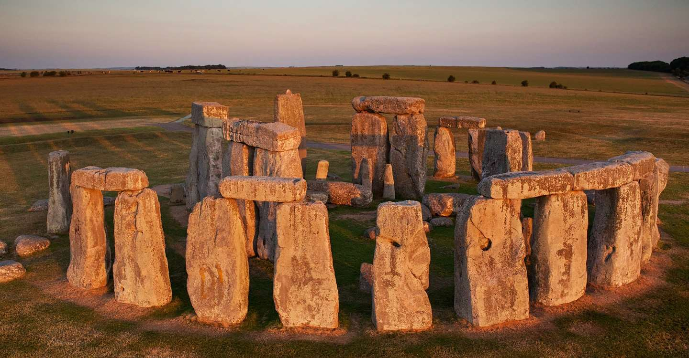
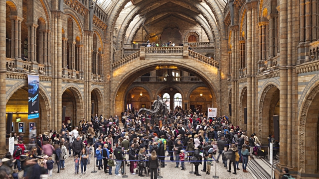
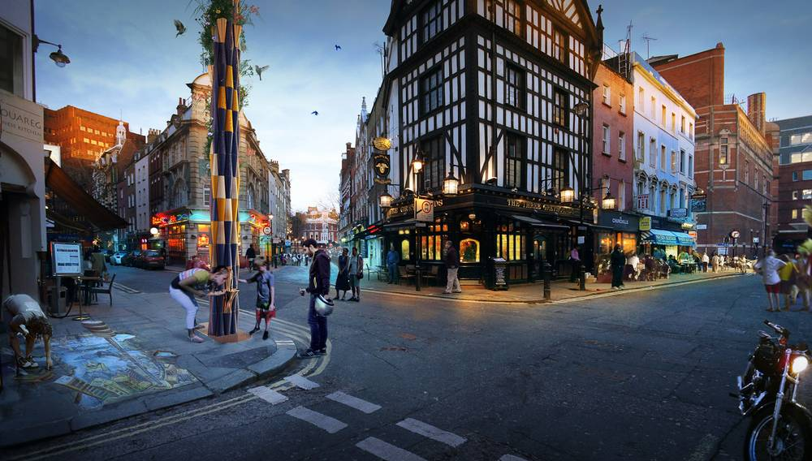
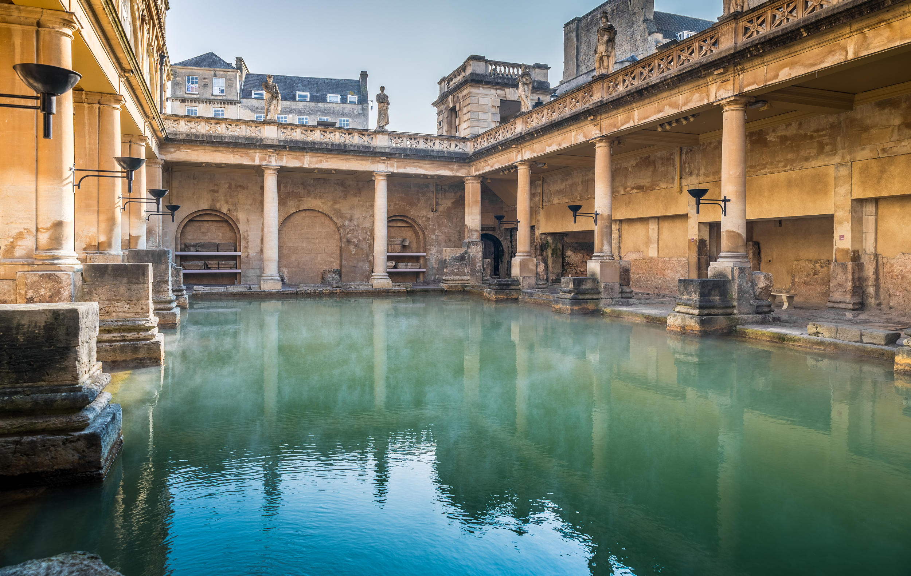
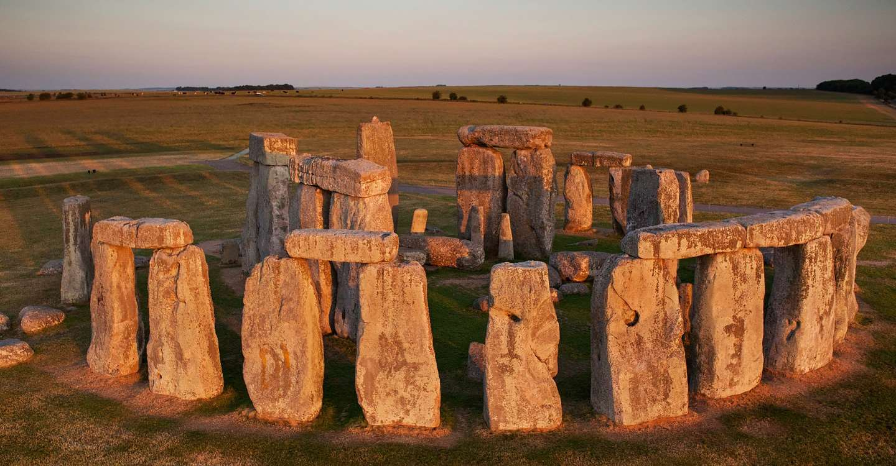
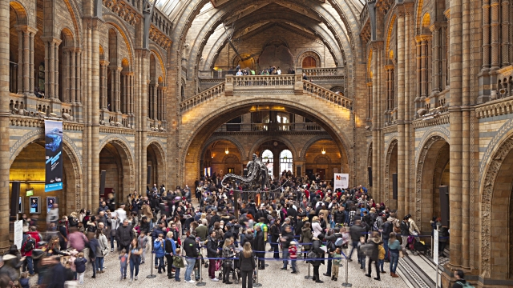
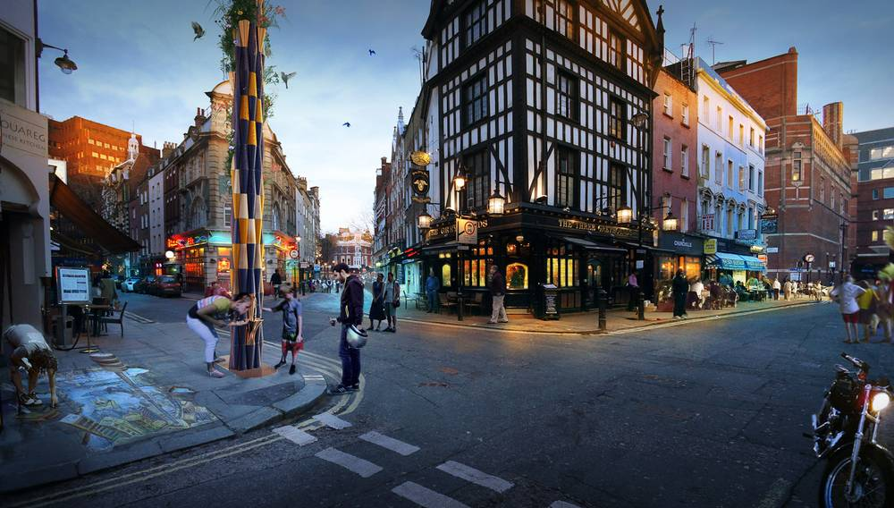
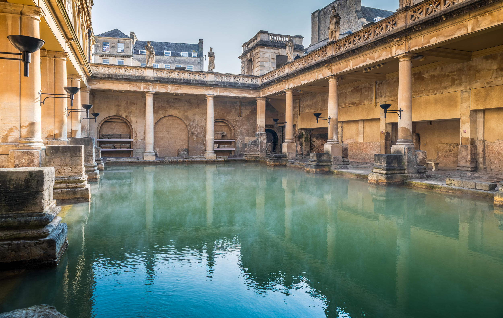

Introduction
England is the largest of the four "home nations" that make up the United Kingdom. It is also the most populous of the four with almost 52 million inhabitants (roughly 84% of the total population of the UK). On the island of Great Britain, Scotland sits to the north of England and Wales is to the west. Northern Ireland (also part of the UK) and the Republic of Ireland lie across the Irish Sea to west of England (and Wales). France and the Channel Islands are across the English Channel to the south, and to the east is the North Sea.
Things that you must do
- Stonehenge

This place is considered to be one of the most famous sites in the world. One can feel the dense complex of the Neolithic age and the Bronze Age as one sets foot in this area. Archaeologists believe that this place was created from 3000 BC to 2000 BC. But some are claiming with the use of radiocarbon dating that the first stones were raised from 2400 to 2200 BC. It was added to the UNESCO’s list of World Heritage Sites in 1986 and some studies released in 2008 stated that Stonehenge may have been a burial ground in the past.
- Natural History Museum

It was officially known as the British Museum until 1992. It is the home of life and earth science specimens that range over to over 70 million items.Visitors can see collections related to mineralogy, paleontology, zoology, and entomology. The best part? There is no admission fee!
- Soho of London

Soho will always be a word connected with live entertainment, sumptuous food and pulsing nightlife. It is the main location for celebrations in London and contains quirky shops. Tourists can go on a walking tour and relax in the Soho Square. It is also a place to locate luxurious hotels and the place to find delicious and cheap snacks as well as fine dining restaurants in London.
Soho of London is likewise a place to check live theatre and performance; the place to see big budget musicals and important plays as well as some smaller stand up acts.
- York Minster
This is considered to be one of the best cathedrals in York, England and is also the largest in Northern Europe. Guests can enjoy the Gothic nave and chapter house. Visitors also love the medieval stained glass and the Five Sisters Window that is over 16 meters (52 ft.) tall. It was constructed as a clear Christian presence during the 14th century. The place also has an attached school and library that was created during the 18th century.
- Roman Baths

The Roman Baths give visitors the ability to still see how public bathing was done in the 19th century. Guests can check out the Sacred Spring, the Roman Temple, the Roman Bath House, and the other buildings on its street level however, the bath themselves are located below the modern street level. This area receives around 1 million visitors per year and was featured in the 2005 TV Program “Seven Natural Wonders” as one of the wonders of the Western world.
Recommended reading
Introduction
England is the largest of the four "home nations" that make up the United Kingdom. It is also the most populous of the four with almost 52 million inhabitants (roughly 84% of the total population of the UK). On the island of Great Britain, Scotland sits to the north of England and Wales is to the west. Northern Ireland (also part of the UK) and the Republic of Ireland lie across the Irish Sea to west of England (and Wales). France and the Channel Islands are across the English Channel to the south, and to the east is the North Sea.
Things that you must do
- Stonehenge
- Natural History Museum
- Soho of London
- York Minster
- Roman Baths

This place is considered to be one of the most famous sites in the world. One can feel the dense complex of the Neolithic age and the Bronze Age as one sets foot in this area. Archaeologists believe that this place was created from 3000 BC to 2000 BC. But some are claiming with the use of radiocarbon dating that the first stones were raised from 2400 to 2200 BC. It was added to the UNESCO’s list of World Heritage Sites in 1986 and some studies released in 2008 stated that Stonehenge may have been a burial ground in the past.

It was officially known as the British Museum until 1992. It is the home of life and earth science specimens that range over to over 70 million items.Visitors can see collections related to mineralogy, paleontology, zoology, and entomology. The best part? There is no admission fee!

Soho will always be a word connected with live entertainment, sumptuous food and pulsing nightlife. It is the main location for celebrations in London and contains quirky shops. Tourists can go on a walking tour and relax in the Soho Square. It is also a place to locate luxurious hotels and the place to find delicious and cheap snacks as well as fine dining restaurants in London. Soho of London is likewise a place to check live theatre and performance; the place to see big budget musicals and important plays as well as some smaller stand up acts.
This is considered to be one of the best cathedrals in York, England and is also the largest in Northern Europe. Guests can enjoy the Gothic nave and chapter house. Visitors also love the medieval stained glass and the Five Sisters Window that is over 16 meters (52 ft.) tall. It was constructed as a clear Christian presence during the 14th century. The place also has an attached school and library that was created during the 18th century.

The Roman Baths give visitors the ability to still see how public bathing was done in the 19th century. Guests can check out the Sacred Spring, the Roman Temple, the Roman Bath House, and the other buildings on its street level however, the bath themselves are located below the modern street level. This area receives around 1 million visitors per year and was featured in the 2005 TV Program “Seven Natural Wonders” as one of the wonders of the Western world.
Recommended reading